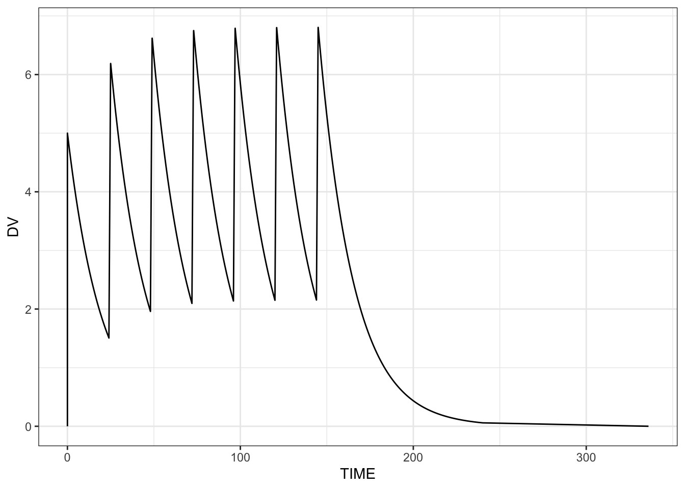

CL = THETA(1) * pow(WT/70, 0.75); mrgsolve version 2.0.1 was released to CRAN in May, 2026. This release adds several new features making it easier to convert your model from NONMEM as well as some much-needed refactoring under the hood. This blog post will tell you all about it.
Ok … let’s get into it.
1 Use ** rather than pow()
A good portion of the mrgsolve model code is essentially C++. To raise base a to power b in C++, you use a function: pow(a, b). This is what we’ve done since the start of mrgsolve.
Starting with version 2.0.1, mrgsolve recognizes ** to do this calculation. So pow(a, b) becomes a ** b.
Taking a common idiom seen in population PK modeling, this covariate model
can become
CL = THETA(1) * (WT/70) ** 0.75;Similarly,
pow(IPRED, 2)can become
IPRED**2mrgsolve recognizes ** with or without any plugin; if you’re converting from a nonmem model, just leave the ** in your code and mrgsolve will take care of it under the hood. While we recommend letting mrgsolve do this conversion, we also export a function that will do this conversion.
code <- c(
"CL = THETA(1) * (WT/70) ** 0.75",
"V = THETA(2) * (IBW/60) ** 0.9",
"HAZT = BETA * (EDRUGT**BETA) * (T**(BETA - 1)) * EXP(covar)"
)
convert_pow(code) %>% cat(sep = "\n")CL = THETA(1)*pow(WT/70, 0.75)
V = THETA(2)*pow(IBW/60, 0.9)
HAZT = BETA*pow(EDRUGT, BETA)*pow(T, BETA-1)*EXP(covar)You’ll notice the result has some missing whitespace from the original. This is expected given the configuration of the parser and is one reason why we recommend letting mrgsolve handle this conversion on the fly, when the model is loaded.
2 Fortran IF/ELSE/THEN
When invoking the nm-vars plugin in version 2.0.1, mrgsolve will recognize Fortran-style IF/ELSE/THEN constructs. Unlike ** which is always available, you must be using nm-vars to get this syntax recognized.
For example, in your nonmem model, you might write
IF(SEX.EQ.1) THEN
TVCL = TVCL * THETA(5);
ENDIFmrgsolve will recognize this syntax and convert to the appropriate C++ construct. This is also done under the hood when the nm-vars plugin is in play, but there is an exported function to let you do it yourself if needed.
nmcode <- '
IF(SEX.EQ.1) THEN
TVCL = TVCL * THETA(5);
ENDIF
'
nmcode <- strsplit(nmcode, "\n")[[1]]
cpp <- convert_fort_if(nmcode)
cat(cpp, sep = "\n")
if(SEX == 1) {
TVCL = TVCL * THETA(5);
}The mrgsolve nm-vars plugin will handle simpler constructs
nmcode <- "IF(FORM.LE.2) FORMF = THETA(9);"
convert_fort_if(nmcode)[1] "if(FORM <= 2) FORMF = THETA(9);"or more complex constructs
nmcode <- '
IF(SEX.EQ.1) THEN
TVCL = TVCL * THETA(5);
ELSEIF (STUDY.NE.5) THEN
TVCL = TVCL - THETA(12);
ENDIF
'
nmcode <- strsplit(nmcode, "\n")[[1]]
cpp <- convert_fort_if(nmcode)
cat(cpp, sep = "\n")
if(SEX == 1) {
TVCL = TVCL * THETA(5);
} else if(STUDY != 5) {
TVCL = TVCL - THETA(12);
}3 What about the semicolons?
mrgsolve now provides a semicolons plugin that will attempt to place semicolons at the end of each statement in select model blocks. This plugin requires you to also invoke nm-vars. This is required because we only want users to invoke this plugin when coming to mrgsolve from nonmem; the use case is converting from nonmem, not to overcome laziness when writing the mode de novo.
As an example, this model compiles as-is and we can run it.
code <- '
$PLUGIN nm-vars autodec semicolons
$PKMODEL advan = 1
$PARAM TVCL = 1, V = 20, FLAG = 1, THETA2 = 1.2
$PK
CL = TVCL
IF(FLAG.EQ.2) THEN
CL = TVCL * THETA2
ENDIF
'
mod <- mcode("semicolons-example", code)Building semicolons-example ... done.mrgsim(mod, ev(amt = 100), end = 2)Model: semicolons-example
Dim: 4 x 3
Time: 0 to 2
ID: 1
ID time A1
1: 1 0 0.00
2: 1 0 100.00
3: 1 1 95.12
4: 1 2 90.48The semicolons are added via convert_semicolons().
sp <- modelparse(code, split = TRUE)
convert_semicolons(sp$PK) %>% cat(sep = "\n")CL = TVCL;
IF(FLAG.EQ.2) THEN
CL = TVCL * THETA2;
ENDIFmrgsolve version 2.0.1 also provides a plugin called nm-like that combines the following.
nm-varsautodecsemicolons
This will give you the most nonmem-like coding experience. See the following modlib() model for an example.
mod <- modlib("nm-like")Building nm-like ... done.see(mod)
Model file: nm-like.cpp
$PROB Model written with some nonmem-like syntax features
$PLUGIN nm-like
$PARAM
THETA1 = 1, THETA2 = 21, THETA3 = 1.3, WT = 70, F1I = 0.5, D2I = 2
KIN = 100, KOUT = 0.1, IC50 = 10, IMAX = 0.9
$CMT @number 3
$PK
CL = THETA(1) * (WT/70) ** 0.75
V = THETA(2)
KA = THETA(3)
F1 = F1I
D2 = D2I
A_0(3) = KIN / KOUT
$DES
CP = A(2)/V
INH = IMAX*CP/(IC50 + CP)
DADT(1) = -KA*A(1)
DADT(2) = KA*A(1) - (CL/V)*A(2)
DADT(3) = KIN * (1-INH) - KOUT * A(3)
$SIGMA 0.0025
$ERROR
CP = A(2)/V
DV = CP*EXP(ERR(1))
$CAPTURE CPWe recommend you only use the semicolons plugin when porting model code from and existing nonmem run. The reason is that it can be difficult to discern which lines need semicolons and which lines don’t. We’ve set up the rules with the expectation that the code we’re working on came from nonmem; working with this guidance is the only way we can for sure know where to put the semicolons. So if you are coding a model in C++ on your own, take the time to add the semicolons yourself.
4 NONMEM to mrgsolve Rstudio addin
If you’re using Rstudio for coding your model, you will have access to a addin that will let you select a chunk of code (or the whole model) and mrgsolve will do the conversion, including addition of semicolons, into your model file. This lets you review what happened and save the semicolons into the model source file rather than relying on mrgsolve to always get the conversion right.
Check out this video to see the addin in action. Watch on YouTube
5 Closed-form 3-compartment model
mrgsolve has provided 1- and 2-compartment pharmacokinetic models for a while now. Starting with mrgsolve 2.0.1, a 3-compartment model is also provided.
mod <- modlib("pk3", compile = FALSE)
param(mod)
Model parameters (N=7):
name value . name value
CL 1 | V2 20
KA 1 | V3 10
Q3 2 | V4 50
Q4 0.5 | . . Using the analytic solutions can provide a large speed advantage over using the equivalent model written in differential equations.
6 PKMODEL gains advan argument
PKMODEL is the code block that you use to ask for 1, 2, or 3-compartment PK models in your model file. Starting with mrgsolve 2.0.1, you can use the advan argument to select the compartmental structure as well as automatically specifying the compartments.
For example, I can get a 1-compartment model with first-order absorption with
code <- '
$PKMODEL advan = 2
$PARAM CL = 1, V = 20, KA = 1.2
'
mod <- mcode("advan-example", code)Building advan-example ... done.param(mod)
Model parameters (N=3):
name value . name value
CL 1 | V 20
KA 1.2 | . . init(mod)
Model initial conditions (N=2):
name value . name value
A1 (1) 0 | A2 (2) 0 Because I left the compartments unspecified, $PKMODEL will automatically give you A1 and A2. You can still ask for compartments named the way you want, but you don’t have to.
advan = 1- one-compartment, bolusadvan = 2- one-compartment, first-order inputadvan = 3- two-compartment, bolusadvan = 4- two-compartment, first-order inputadvan = 11- three-compartment, bolusadvan = 12- three-compartment, first-order input
7 ERR(n)
When using the nm-vars plugin, ERR(n) is now available as a synonym for EPS(n).
$PLUGIN nm-vars autodec
$ERROR
IPRED = A(2) / V;
Y = IPRED * EXP(ERR(1));8 Work with objects in the model environment
Did you know that the model object contains an R environment where you can assign and get R objects before, during or after a simulation? New in mrgsolve 2.0.1, you can assign() an object to that environment from inside your model. We’ll show you that here; but first, let lay some groundwork.
8.1 Initialize the model environment
You can use the $ENV block to initialize the model with an object in the model environment.
code <- '
$ENV vec <- c(1,2,3)
'mod <- mcode("env", code)Building env ... done.8.2 Get objects from the environment
Once you have the model object, you can extract the environment.
env_get_env(mod)<environment: 0xbaba70008>env_get_env(mod) %>% as.list()$vec
[1] 1 2 3Or you could get() the object with env_get().
env_get(mod, "vec")[1] 1 2 3If I wanted to change the value of vec in the environment, run this.
mod <- env_update(mod, vec = c(3,4,5))
env_get(mod, "vec")[1] 3 4 5Or just use assign.
assign("vec", c(7,8,9), env_get_env(mod))
env_get(mod, "vec")[1] 7 8 9The simulation output object also has a copy of the model object; so you can get() an object from the simulation output as well.
out <- mrgsim(mod)
env_get(out, "vec")[1] 7 8 9But you might coerce the simulated output to data frame; then you would have to look at the model object to find the objects in that environment.
8.3 Create and assign objects en model
New in mrgsolve 2.0.1, the mrgx plugin gives you access to an assign() function that will let you put R objects into this environment from inside your model.
The call is mrgx::assign("name", value, self)
"name"- a string literal with the name for the objectvalue- the object you want to assignself- the model self object; this isn’t the environment, but it knows where to find the environment
Consider this model where we run dynamic dosing and collect pieces of output data in C++ deques. Once we hit the final row of the simulation, we will take that data, create a data frame, and assign() it into the model environment.
model/assign-2-0-1.solv
[ plugin] mrgx evtools
[ global ]
evt::regimen reg;
std::deque<double> Time;
std::deque<double> Dv;
[ param ] CL = 1, V = 20
[ pkmodel ] advan = 1
[ error ]
if(NEWIND <=1) {
reg.init(self);
reg.ii(24);
reg.amt(100);
reg.until(168);
evt::ev obs = evt::tgrid(0, 240, 1);
self.push(obs);
}
reg.execute();
Time.push_back(TIME);
Dv.push_back(A1/V);
if(FINAL_ROW) {
Rcpp::DataFrame data = Rcpp::DataFrame::create(
Rcpp::Named("TIME") = Time,
Rcpp::Named("DV") = Dv
);
mrgx::assign("data", data, self);
}Let’s compile and run that model.
mod <- mread("model/assign-2-0-1.solv")Building assign-2-0-1_solv ... done.out <- mrgsim(mod, end = -1, add = c(0,336))I specifically set up the simulation to output only the first and last time of the simulation, ignoring all the doses and observations in between. We’ll get the rest of the data from the assigned object.
outModel: assign-2-0-1_solv
Dim: 2 x 3
Time: 0 to 336
ID: 1
ID time A1
1: 1 0 1.00e+02
2: 1 336 9.69e-03Remember, we assigned the output data frame to data in the model; so we look there once the simulation is complete.
data <- env_get(mod, "data")
head(data) TIME DV
1 0 0.000000
2 0 5.000000
3 1 4.756147
4 2 4.524187
5 3 4.303540
6 4 4.093654library(ggplot2)
ggplot(data, aes(TIME, DV)) + geom_line() + theme_bw()
9 Last record for an individual or dataset
Two macros were added:
LAST_ROWis true when processing the last row in the entire simulationLAST_IROWis true when processing the last row for an individual
10 Internal improvements
Prevent an unneeded copy of the data when returning simulated data.
During population simulation, and individual’s data records are cleared prior to moving on to the next individual; this provides a theoretical improvement in memory utilization for big simulations.
11 Breaking changes
mrgsolve now depends on
R >= 4.1data_set()andidata_set()no longer accept.subset,.select,object, orneedarguments. These arguments allowed filtering and column selection inside the call; that processing should now be done on the data frame before passing it todata_set()oridata_set(). (#1374)The
nargument tosimeta()andsimeps()has been discouraged for a while and is now removed. Callingsimeta(n)orsimeps(n)to resimulate a single ETA or EPS value is no longer supported. Usesimeta()orsimeps()(no argument) to resimulate all values. (#1373)knobs(),wf_sweep(), andrender()have been removed. These functions were previously deprecated. (#1369)The default value of
rootin$NMXMLand$NMEXThas changed from"working"to"cppfile". The root directory for locating NONMEM output files now defaults to the directory containing the model.cppfile rather than the R working directory. Passroot = "working"to restore the previous behavior; but users are highly encouraged to use the new default. (#1368)summarise.each()is removed; it has not been practically reachable by the user for several years (#1352).Several
modlibmodel library models have had parameter and compartment names standardized (#1361):- The first extravascular compartment is now named
EV(wasEV1) inpk1cmt,pk2cmt,irm1-irm4, andemax. - The first absorption rate constant is now named
KA(wasKA1) in models that previously used numbered names. - Code that references these compartments or parameters by name (e.g.,
init(mod, EV1 = 0)orparam(mod, KA1 = 1)) will need to be updated. - We continue to discourage users from using these models in production code.
- The first extravascular compartment is now named